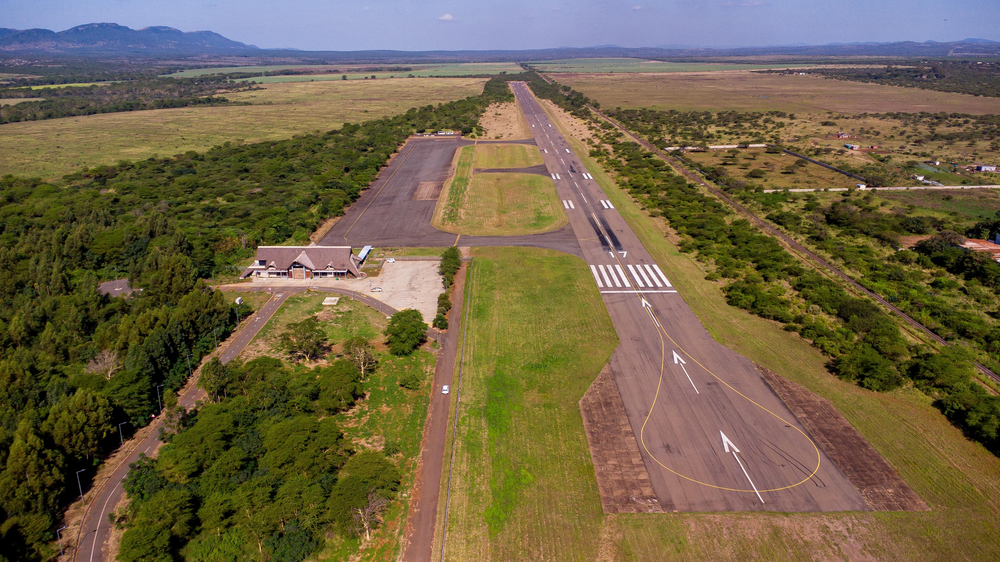

Return on Investment Analysis

Strategic investments in airport infrastructure yield significant economic returns
Financial Benefits
| Benefit | Cost (Estimated) | Time to Realise | Measured By |
|---|---|---|---|
| Higher Aeronautical Revenue | R8m-R25m (F&R upgrades); R15m-R150m (infrastructure) | 1–3 years | Increased flights; aircraft movements; aeronautical revenue |
| Expanded Non-Aeronautical Revenue | R5m-R40m (retail/commercial); R2m-R10m (master planning) | 2–7 years | Rental income; occupancy rates; % revenue diversification |
| Reduced Municipal Subsidy Dependence | R1m-R5m annually (business development) | 3–5 years | Reduced subsidies; improved cash-flow |
| Trade & Investment Growth | R20m-R150m (cargo/logistics); R1m-R10m (route incentives) | 4–10 years | Cargo volumes; investor commitments; new business relocations |
Human Development Benefits
| Benefit | Cost (Estimated) | Time to Realise | Measured By |
|---|---|---|---|
| Job Creation (Direct & Indirect) | R2m-R10m (training); R1m-R3m (HR programmes) | 1–4 years | Jobs created; youth employment; retention rates |
| Strengthened Aviation Skills Pipeline | R5m-R20m (training partnerships); R500k-R3m (STEM initiatives) | 2–5 years | Certified staff numbers; local hiring ratios |
| Improved Organisational Performance | R500k-R2m (performance systems) | 1–2 years | Productivity KPIs; audit outcomes; reduced disruptions |
Innovation & Technology Benefits
| Benefit | Cost (Estimated) | Time to Realise | Measured By |
|---|---|---|---|
| Improved Safety & Regulatory Compliance | R2m-R20m (digital safety systems); R3m-R12m (compliance support) | 1–3 years | SACAA audit results; reduced non-compliances |
| Higher Operational Efficiency | R10m-R60m (automation, biometrics) | 2–4 years | Processing time reduction; on-time performance |
| Greater Airline & Investor Attractiveness | R10m-R80m (ICT upgrades); R3m-R15m (innovation ecosystem) | 3–8 years | New routes; traffic growth; investor activity |